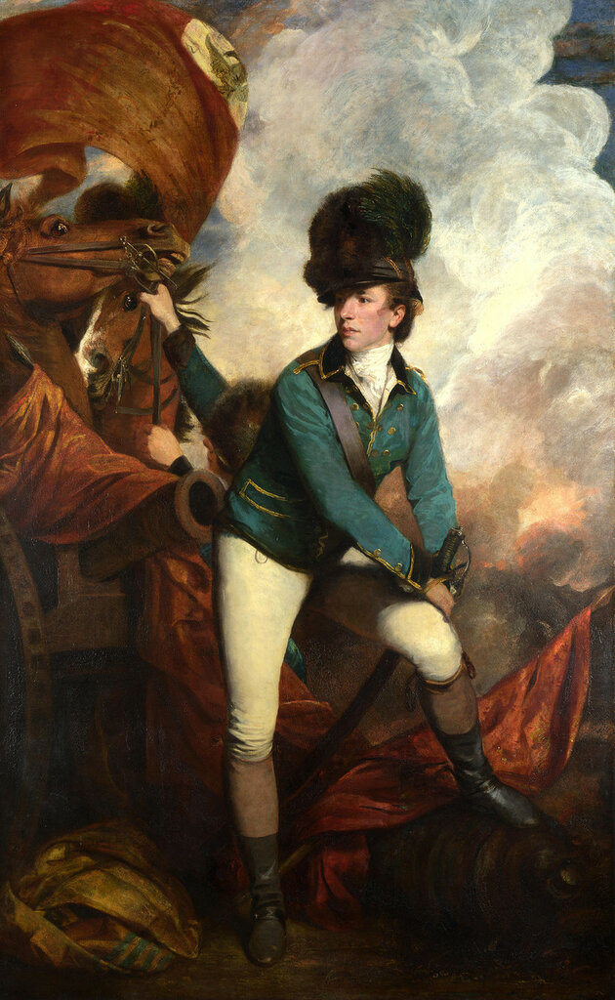
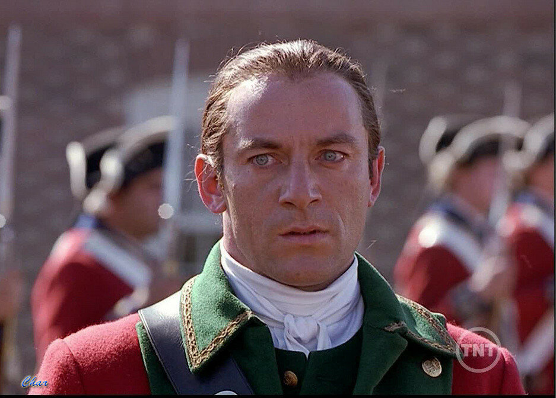
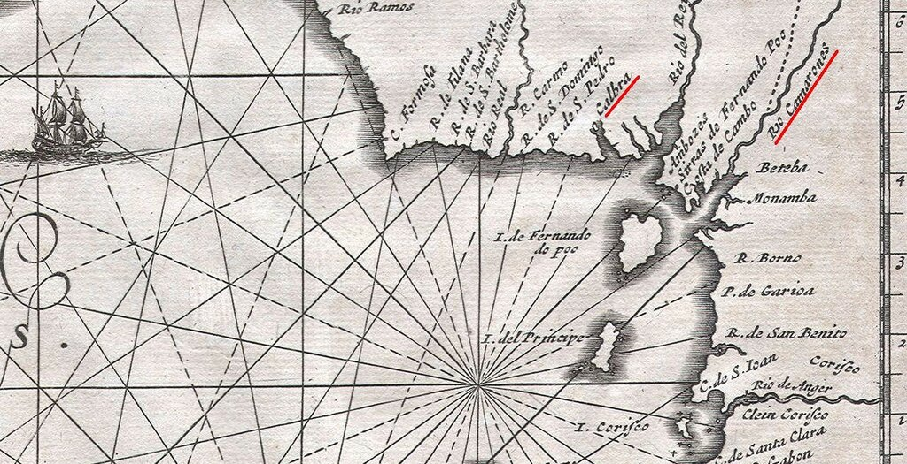
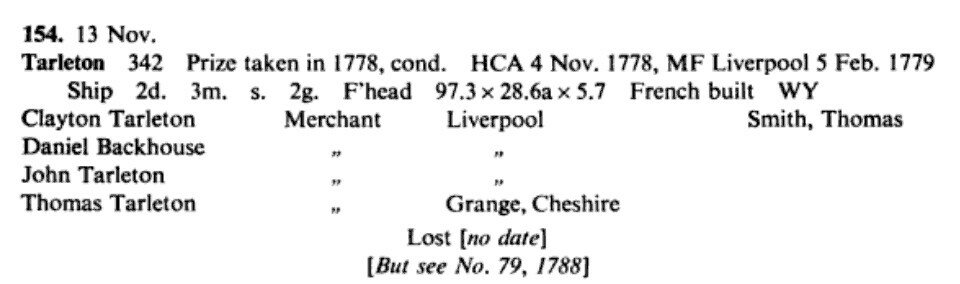
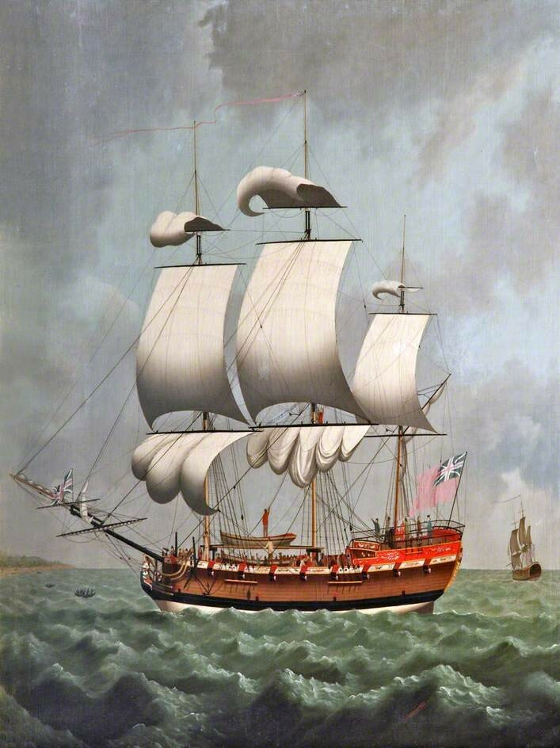
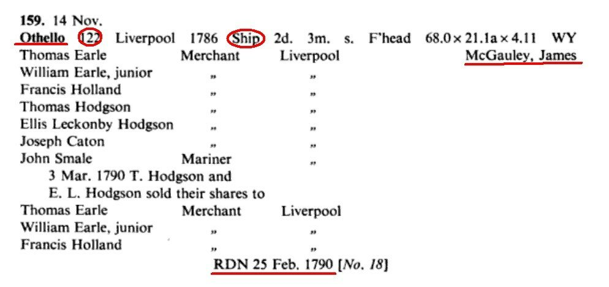
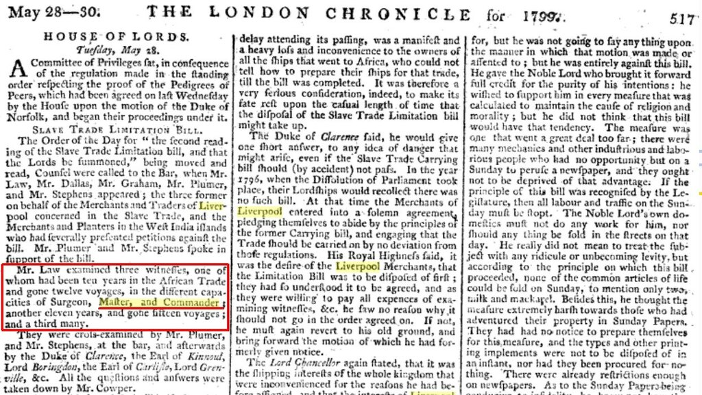

antoin, а сугубо морской, корабельный аспект.
antoin, а сугубо морской, корабельный аспект.Об истце нам известно довольно много. Тарлетоны (Tarletons) – это семья состоятельных ливерпульских работорговцев, владевшая двумя десятками невольничьих судов. Глава семьи в тот период (конец восемнадцатого века) – генерал Банастр Тарлетон (Banastre Tarleton) – являлся членом английского парламента и владельцем крупной компании по торговле рабами. Это была заметная в британской истории фигура, один из командующих британской армии во время войны за независимость США в 1775—1781 годах. По свидетельствам современников, Тарлетон в ходе боевых действий проявлял большую жестокость, в том числе во время так называемой Уоксхауской резни (Waxhaw massacre). В литературе встречаются данные ему прозвища «Кровавый Тарлетон» и «Каролинский мясник».

Портрет Банастра Тарлетона кисти Джошуа Рейнольдса, 1782. National Gallery.
Любители американской истории наверняка знают кинофильм «Патриот». Именно Б.Тарлетон послужил протипом для жестокого драгунского полковника Уильяма Тавингтона в исполнении Джейсона Айзекса.

И дед, и отец Тарлетона были крупными судовладельцами и работорговцами. Именно поэтому и сам он отстаивал в парламенте линию тех, кто выступал против отмены рабства. Параллельно, естественно, поддерживая дело своих предков, которым продолжали промышлять его братья и сыновья.
Впервые обстоятельства дела, как я понимаю, были описаны в авторитетном сборнике Томаса Пика (Thomas Peake) «Cases Determined at Nisi Prius: In the Court of King's Bench, from the Sittings After Easter Term, 30 Geo. III. to the Sittings After Michaelmas Term, 35 Geo III Both Inclusive [1790-1794].» London, 1795. (Я пользовался репринтным изданием C. Hunter, 1820) Изложим рассматриваемое событие, опираясь на этот источник.
В качестве истцов в деле выступают «владельцы и собственники» (possessed and owners) некоего судна Tarleton , которое в момент рассматриваемого события находилось на якоре у берега Калабара (юг нынешней Нигерии).

Участок побережья Западной Африки Калабар-Камерун
О невольничьем судне Tarleton мы можем узнать из реестра купеческих судов, зарегистрированных в Ливерпуле.

Выписка из Liverpool Registry of Merchant Ships (Robert Craig, Rupert C. Jarvis)
В реестре отмечено, что было еще одно купеческое судно Tarleton, зарегистрированное в Ливерпуле в 1788 году. По своим характеристикам оно очень близко к нашему судну, однако у него другой капитан (John Mitchell) и оно погибло у берегов Уэльса 26 мая 1789 года, т.е. за несколько лет до изучаемого нами события.
Видно, что Tarleton достаточно крупный по тогдашним масштабам корабль водоизмещением 342 тонны, трехмачтовый, двухдечный, с прямым парусным вооружением (ship) французской постройки. Взят англичанами в качестве приза в 1778 году. Выглядеть он могло примерно так

Ливерпульское невольничье судно. Художник Уильям Джексон. Merseyside Maritime Museum
Далее в судебном деле отмечается, что кораблем Tarleton, который на борту имел груз товаров для торговли с африканскими аборигенами, командовал «некий Fairweather». Во всех последующих изложениях этого дела у других авторов имя это не упоминается, а, как правило, заменяется именем Тарлетона. Мы проверили эту версию. Капитан Patrick Fairweather (1735-1799) – известная среди ливерпульских работорговцев личность. Он командовал кораблями Mary и Toms, принадлежавшими дому Тарлетонов, впоследствии сам стал собственником корабля. Прекрасно знал навигацию у берегов Западной Африки, опубликовано несколько его статей с описаниями берегов Старого Калабара и Камеруна. Держал собственную работорговую контору в Ливерпуле. По данным известного историка работорговли Бирента (Behrendt) Патрик Фэйрвезер совершил пятнадцать плаваний из Ливерпуля, и все они имели целью Старый Калабар и Камерун.
Мог ли в рассматриваемое нами время этот опытнейший капитан, получивший еще в конце семидесятых годов от британских властей титул Senior Captain – «капитан-наставник», пойти простым капитаном на таком корабле, как Tarleton? Думаю, нет. И вот почему. В тексте Томаса Пика указано, что с находящегося у берега Калабара корабля, которым как бы командовал Фэйрвезер, было направлене меньшее по размерам судно с экипажем на борту под командованием некоего Томаса Смита (Fairweather had sent a smaller vessel called the Bannister with a crew on board, under the command of one Thomas Smith,) Но мы уже видели в записях Ливерпульского реестра, что «некий Томас Смит» был капитаном Тарлетона с момента его регистрации в 1786 году. Так что Фэйрвезер был скорее всего в своей роли – наставника, или, если провести параллель с «Белым бушлатом» Мелвилла,был коммодором, главой экспедиции. [Такая практика существовала во всех флотах. Когда я служил на подводной лодке, с нами в море часто выходил такой наставник, как правило, замкомдива или замкомбрига по подготовке командиров. Звали мы его "выездной дядька"] А командовал кораблем действительно Томас Смит. А «smaller vessel» Баннистер не что иное, как изображенный на приведенном выше рисунке катер на борту корабля , или баркас. Да и само название его – Баннистер – не напоминает ли оно нам имя нашего героя (Банастр Тарлетон), в честь которого назван корабль?
Смит на своем баркасе подошел к берегу (большим кораблям туда было не подойти из-за малых глубин) и вступил в контакт с местными жителями, договариваясь о торговой сделке. Эту картину наблюдали с находящегося поблизости другого английского корабля «Отелло» (Othello).
Когда аборигены на своей пироге отошли от судна конкурирующей фирмы, капитан Отелло сделал по ним несколько выстрелов, в результате которых один негр был убит. Остальные быстро скрылись и больше не рисковали вступить в контакт с людьми Тарлетона. В результате торговля была сорвана и обиженный купец подал судебный иск к капитану Отелло.
О шкипере судна Отелло, выступившего ответчиком в рассматриваемом деле, известно мало, так что нам придется самим разбираться в его должности и положении.

Выписка из Liverpool Registry of Merchant Ships (Robert Craig, Rupert C. Jarvis)
Джеймс Макголи (McGauley, или, в написании у Пика, M’Gawley) был «master and commander» (of which he was master and commander) на «Отелло». Важно отметить использование «of which» в этом обороте. Таким образом дается понять, что master and commander это не звание Макголи, а его должность: Макголи был мастер и коммандер судна «Отелло».
Сразу же мы снимаем с обсуждения версию, что этот капитан был отставным военным, который сохранил за собой старое звание, которое он имел на военном флоте. Положение об этом звании подразумевает (мы об этом писали раньше), что его обладатель, в отличие от капитана, теряет право на такой титул сразу же после ухода с корабля.
Нам еще не приходилось встречаться с практикой использования титула «мастер и коммандер» в коммерческом флоте. Поэтому придется навести справки в литературе.
Лен Барнетт в своей статье (The Royal Navy and its seagoing reserves from the late Seventeenth to mid Twentieth Centurie) пишет:
These warrant officers were known as masters and gained their qualifications from Trinity House, but were responsible to the Admiralty. They took quarterdeck watches and could even command H.M. vessels other than warships. In this case they were known as ‘master and commander’.
Эти уоррент-офицеры имели титул мастер и получали лицензию от Тринити Хаус, хотя подчинялись Адмиралтейству. Они несли вахту на квартер-деке и даже могли командовать невоенными судами его величества. В этом случае они были известны как «мастер и коммандер».
http://www.barnettmaritime.co.uk/mainaval.htm
Т.е. если перед нами командир невоенного судна, находящегося в составе флота его (ее) величества, то его величают «мастер и коммандер». Думаю, к нашей ситуации такой случай не подходит: суда флота его величества находились под юрисдикцией военных властей, а в нашем случае процесс гражданский.
Думаю, здесь дело в другом. Мы имеем дело не с офицером королевского флота, не важно – военного или торгового, а с купцом-работорговцем. У них не было званий, но были должности и титулы. В то время капитанов купеческих судов официально называли либо мастер, либо коммандер. Вот примеры этого употребления:
…That we, James Peter Fearon, commander of the ship Belvidere, in the service of the honourable East India Company, and Peter Douglas of Fitzroy-square, are held и т.д
…The law charges the person (viz. common carrier, hoyman; master of a ship) thus entrusted to carry goods, against all events but acts of God and of the King’s enemies и т.д.
Оба титула были равнозначны.
“Commander – the master of a merchant ship “
Richard Mayne, The Language of Sailing, Taylor & Francis, 2000
Их употребление, видимо, зависело от традиций того или иного судна или правил внутри владеющей им компании. Вот, например, в этом случае карьера моряка на торговых судах охватыает его должности и мастера, и коммандера:

Скан газеты The London Chronicle за 1799 год.
В официальных бумагах и законодательных актах не делали различия между этими двумя титулами, и обычно использовали формулу «master or commander». Вот, например, начало стандартного бланка договора между капитаном и членами команды торгового судна:
ARTICLES OF AGREEMENT BETWEEN THE MASTER AND MARINERS.
It is hereby agreed between the master, seamen, and mariners of the ship …now bound for the port of…and … the master or commander of the said ship...
Мне лично это напоминает использование в наших официальных документах формулы «командиры и начальники».
Особенно щепетильно к таким вопросам относились в судебном делопроизвеодстве, где никак нельзя было допускать двойного толкования. Поэтому там очень часто применялась формула, охватывающая все возможные случаи:
master or commander, or other person having or taking the charge or command of any such ship or vessel
мастер или коммандер или любой другой, кто несет или принимает на себя бремя руководства любым таким кораблем или судном
Так, в конце концов, какой же ответ надо дать на вопрос, поставленный уважаемым
antoin:Всё-таки как следует понимать master and commander на работорговом корабле? Это собственник корабля или бывший военный?
Я думаю, ответ этот простой: капитан корабля.
P.S. Судьба меня провела по некоторым местам Западной Африки. Я видел следы, оставленные англичанами и французами в Сенегале, в землях туарегов, следы португальских поселений в Гвинее-Бисау, яростно торговался с местными жителями в Гамбии. Широко раскрытыми глазами смотрел на саванну Южного Судана и закутывал голову в платок от пыльной бури в ливийской пустыне. И уже ничто там, вроде бы, не напоминало о событиях давней истории работорговли, но все же в памяти надолго засел взгляд исподлобья одного из аборигенов, который предлагал купить у него старинный африканский меч: взгляд надежды и – недоверия.